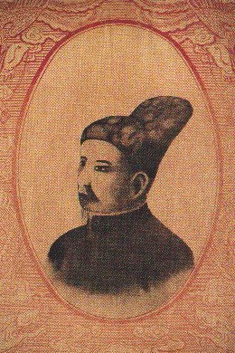

Sau nhiều phen chống chọi với Tây Sơn, bị đẩy vào thế cùng lực kiệt, Nguyễn Ánh đích thân đi cầu viện vua Xiêm giúp đỡ.
Tháng 2 năm 1784, 20.000 quân Xiêm cùng 300 chiến thuyền ồ ạt tấn công Nam Bộ. Vua Quang trung đem quân vào Gia Định, với mưư lược tuyệt vời, đánh tan đội quân hùng hậu này.
Không còn hy vọng trông cậy vào người Xiêm, Nguyễn Ánh tìm cách cầu viện Hoà Lan, song Giám Mục Bá Đa Lộc, một cận thần người Pháp của Nguyễn Ánh, gợi ý ông tìm đến nước Pháp. Thế là Nguyễn Ánh bắt tay thực hiện kế hoạch đã đựợc vạch ra
trong Biên bản một cuộc họp với quần thần tại đảo Phú Quốc trước đó, với những điều khoản cơ bản là:
- Cần phải cầu viện nước Pháp giúp đở
- Giao cho Bá Đa Lộc toàn quyền thương thuyết
- Giao Hoàng tử Cảnh ( 1) cho Bá Đa Lộc đem theo làm tin
- Xin Pháp giúp 1.500 lính và tàu bè, súng ống, vật dụng
- Nhường cho Pháp cù lao Hàn
- Nước Pháp có quyền sử dụng cửa biển Hàn
- Chịu nhường cho nước Pháp đảo Côn Lôn
- Cho nước Pháp độc quyền tự do buôn bán ở nước Nam
Đoàn đại diện của Nguyễn Ánh đứng đầu là Giám Mục Bá Đa Lộc và Hoàng Tử Cảnh lên đường đo cầu viện, mang theo cả một bức thư của Nguyễn Ánh gửi cho Hoàng Đế Pháp Louis XVI:
- " Dầu đại quốc với tiểu quốc tình thế khác nhau, dầu đông tây cách mấy ngàn trùng, tôi dám chắc rằng Hoàng Đế sẽ tin lời tôi đã tin Giám Mục Bi Nhu ( 2) vậy. Nay tôi giao cho nông ấy Nguyễn Phúc Cảnh, con trưởng của tôi, một cái Kim bửu di truyền và một Biên bàn của Hội Đồng, đủ làm bằng chứng. Tôi chỉ mong ơn Hoàng Đế cho con tôi sớm trở về với binh thuyền..."
Kết quả thương thuyền của Giám Mục Bá Đa Lộc là sự ra đời của Hiệp ước Versailles ký kết vào ngày 28/11/1787 giữa Bá tước De Montmorin, đạu diện Nguyễn Ánh. Đồng thời, ngay ngay trong ngày đó, Bá Đa Lộc được phong chức Đặc ủy viên của Hoàng Đế Pháp bên cạnh Nguyễn Ánh ( 3)
Hiệp ước Versailles gồm 10 điều khoản, cơ bản giống với Biên bản mà Giám Mục Bá Đa Lộc mang theo để thương lượng. Nghĩa là bên cạnh việc Pháp hứa gởi quân cứu viện cho Nguyễn Ánh ( điểu khoản 1) Nguyễn Ánh chấp thuận để cho Pháp được riêng hưởng trọn vẹn quyền buôn bán trên khắp lãnh thổ nước Nam ( điều khoản 6), được quyền sở hưũ và chủ quyền thương cảng Hội An ( điều khoản 3) và đảo Côn Lôn ( điều khoản 5)
Chúng ta biết rằng, năm 1792 vua Quang Trung lâm bệnh nặng rồi mất đột ngột, Quang Toản lên ngôi lúc mới 10 tuổi. Vương nghiệp triều Tây Sơn, do vậy, nhanh chóng rơi vào suy vong, Hiệp ước Versailles về sau không thực hiện được do nội bộ quan chức Pháp lục đục, song nó đã đe dọa nghiêm trọng sự tồn tại của triều Tây Sơn vốn đã yếu thế. Bởi lẽ, bên cạnh Nguyễn Ánh giờ đây đã có Đặc ủy viên Hoàng Đế Pháp Bá Đá Lộc đóng vai trò như một Bộ Trưởng chiến tranh kiêm cả Ngoại Giao, cùng nhiều tướng lĩnh người Pháp khác:
Olivier Puymanel ( Tham mưu trưởng kiêm chỉ huy trưởng Pháo Binh),
Phillipe Vannier ( Khâm Sai Chưởng Cơ),
Jean Baptise Chaigneau ( Khâm Sai Cai Đội ),
Despiaux ( Y sĩ riêng của Nguyễn Ánh)..v..v...
Vừa Gián tiếp vừa trực tiếp, những diễn biến ở Đàng trong sau Hiệp ước Versailles đã giúp đỡ đắc lực cho Nguyễn Ánh lên ngôi Hoàng Đế vào tháng 5/ 1802, lập nên Vương Triều Nguyễn, đồng thời cũng mở đường cho sự bảo hộ chính thức của thực dân Pháp ở Việt Nam sau này.
chú thích
1) Hoàng tử Cảnh: Con trai trưởng của Nguyễn Ánh
2) Bi Nhu ( Pierre Joseph Georges Pigneau de Béhaine): Tên của Giám Mục Bá Đá Lộc trước 1771
3) Lúc bấy giờ, Pháp gọi Nguyễn Ánh là Quốc Vương Đàng Trong